A vacina da dengue é uma imunização contra os quatro sorotipos do vírus da dengue (DENV-1, DENV-2, DENV-3 e DENV-4). Ela é administrada por via subcutânea e é composta por um vírus atenuado.
Em 2015, foi aprovada no Brasil a primeira vacina contra a dengue, a Dengvaxia®, disponibilizada apenas em clínicas particulares. Em 2023, foi aprovada no Brasil a segunda vacina contra a dengue, a Qdenga®, incorporada ao SUS em 2024. A aplicação gratuita da vacina pelo sistema público de saúde do Brasil começou em fevereiro de 2024 e foi direcionada, a princípio, aos grupos mais suscetíveis da população.
A vacinaçao é muito importante, pois ajuda a reduzir hospitalizações e complicações graves, oferecendo proteção contra os quatro tipos do vírus da dengue. Isso é essencial para diminuir o impacto da doença em áreas com alta incidência.

 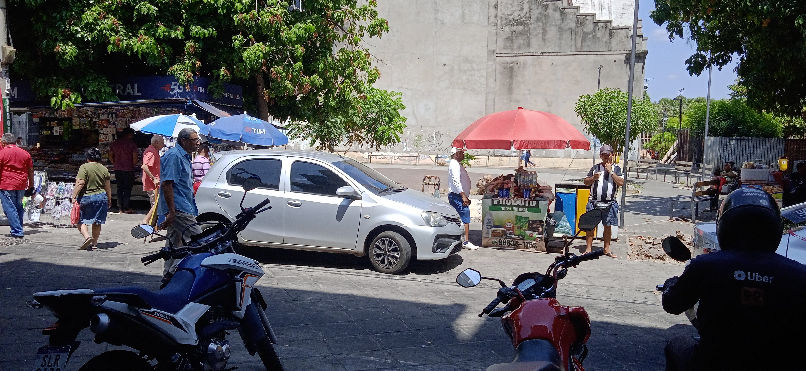
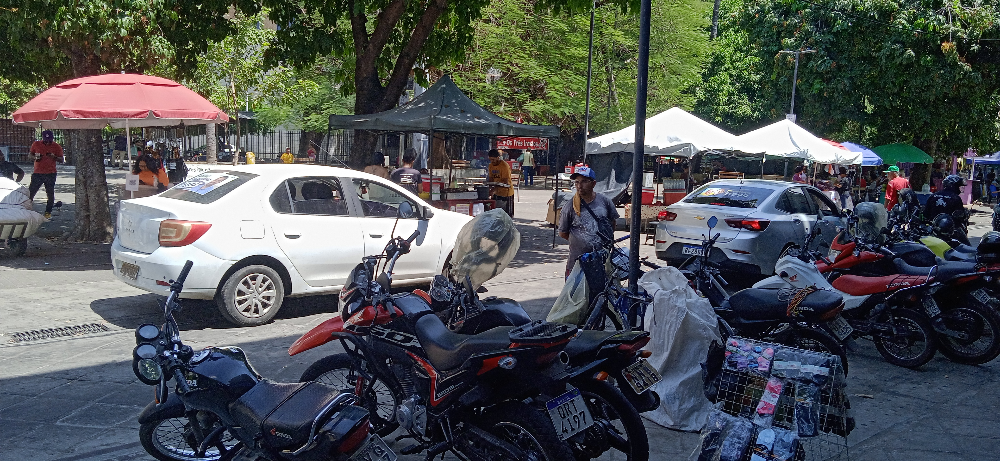
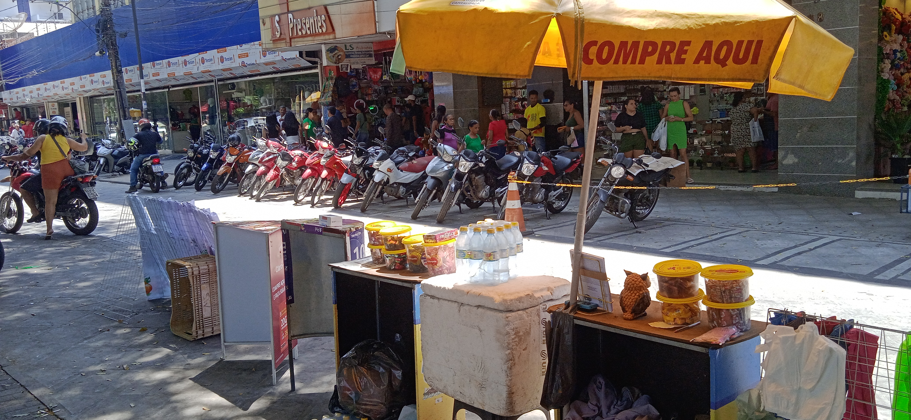
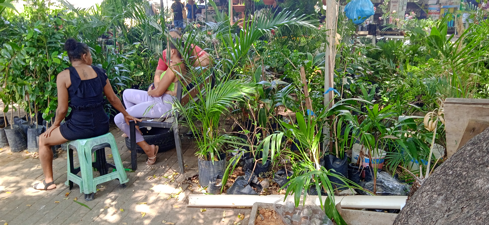
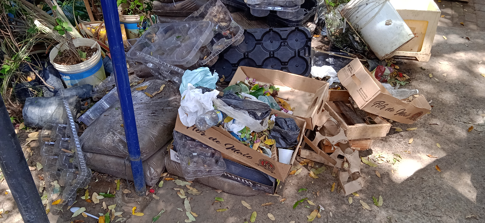
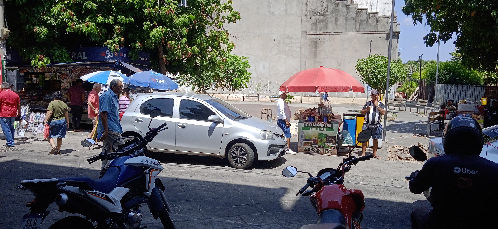
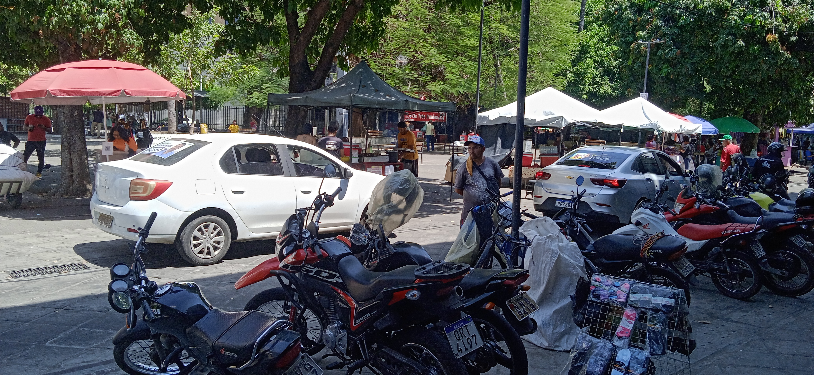
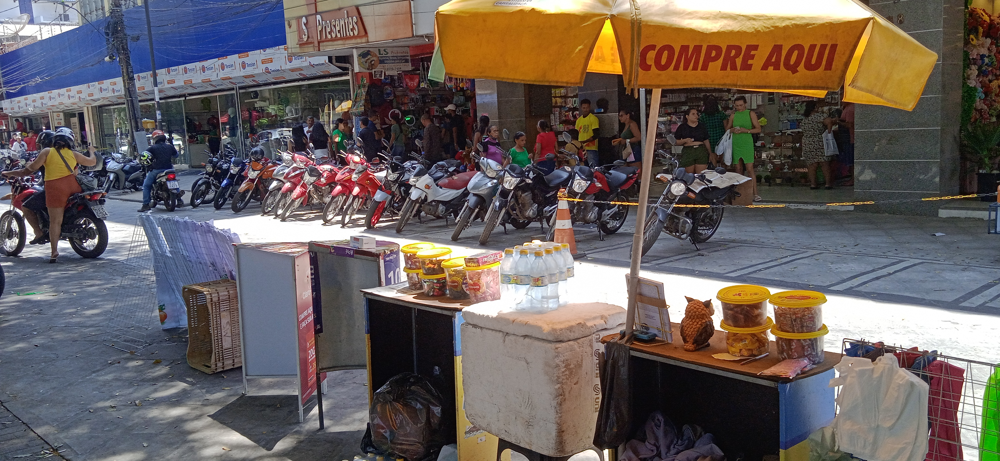
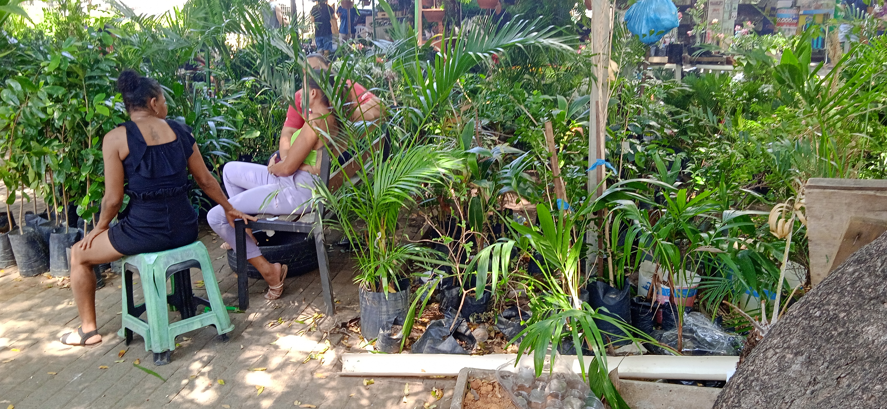
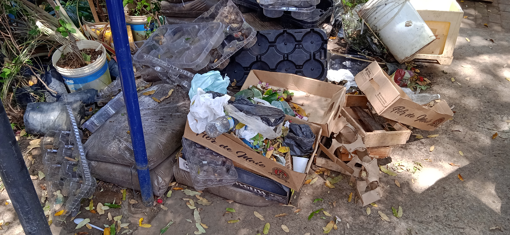
 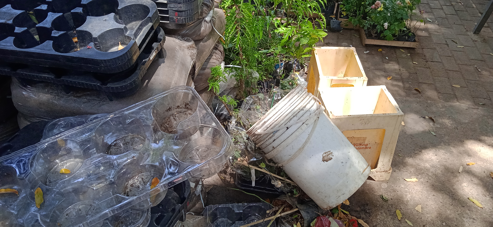
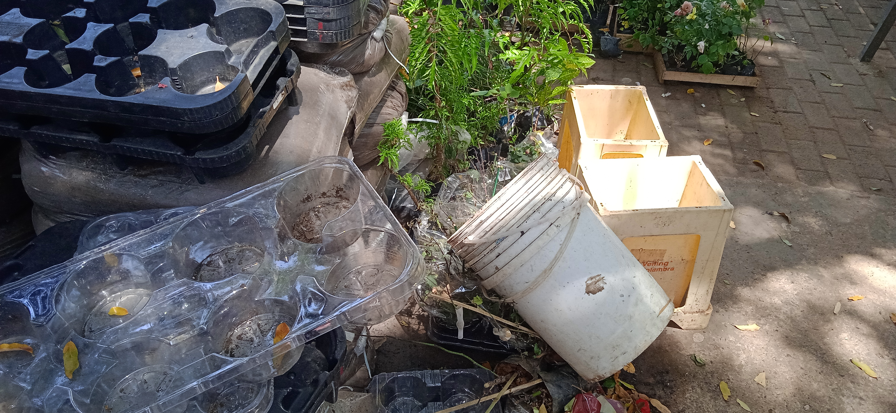


 Caracteriza-se por dores intensas nas articulações, podendo se tornar crônica e causar limitações de movimento.
Caracteriza-se por dores intensas nas articulações, podendo se tornar crônica e causar limitações de movimento. Evitar o acúmulo de água parada em locais como pneus, vasos de plantas e garrafas.
Evitar o acúmulo de água parada em locais como pneus, vasos de plantas e garrafas. Manter caixas d'água, tonéis e barris bem fechados.
Manter caixas d'água, tonéis e barris bem fechados. Utilizar areia nos pratos de vasos de plantas ou realizar limpeza semanal.
Utilizar areia nos pratos de vasos de plantas ou realizar limpeza semanal. Guardar garrafas com a boca virada para baixo.
Guardar garrafas com a boca virada para baixo. Retirar folhas, galhos e tudo que possa impedir que a água escorra pelas calhas.
Retirar folhas, galhos e tudo que possa impedir que a água escorra pelas calhas. Manter limpas as piscinas.
Manter limpas as piscinas.